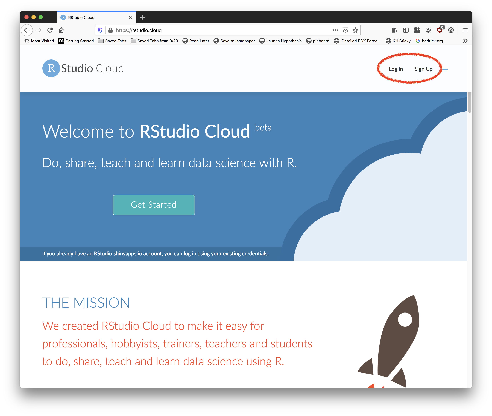
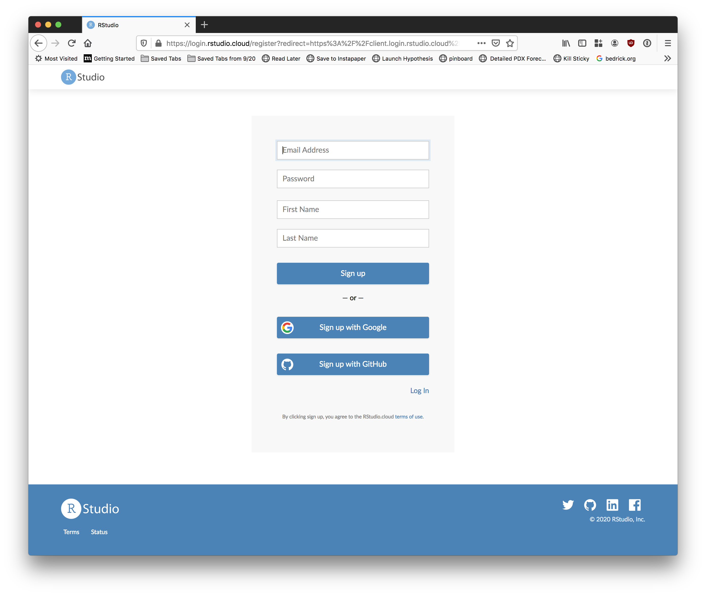
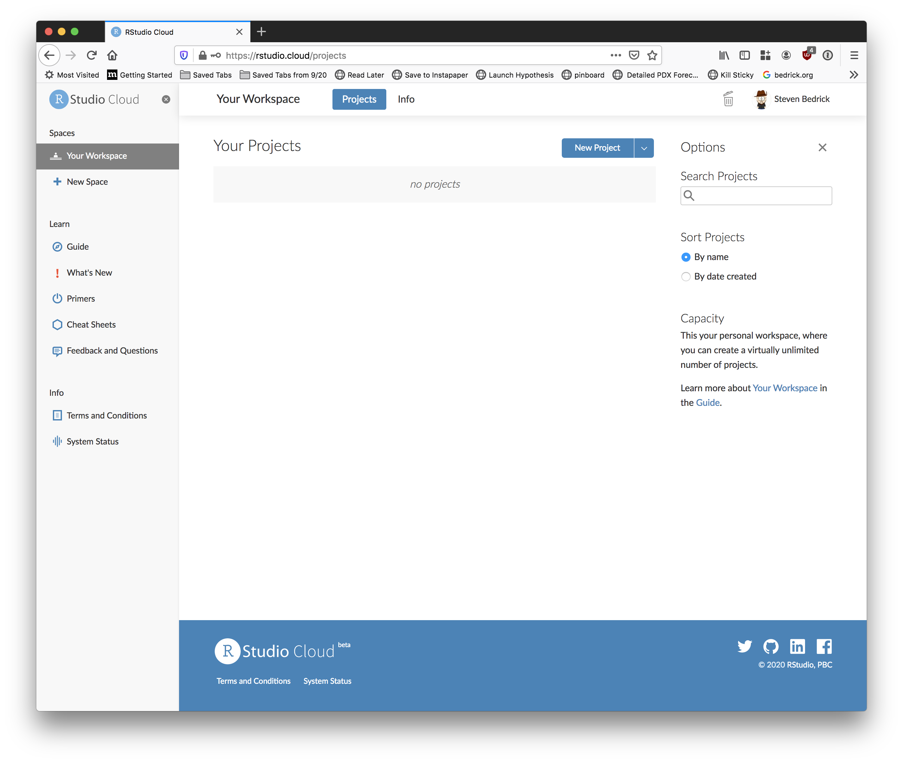
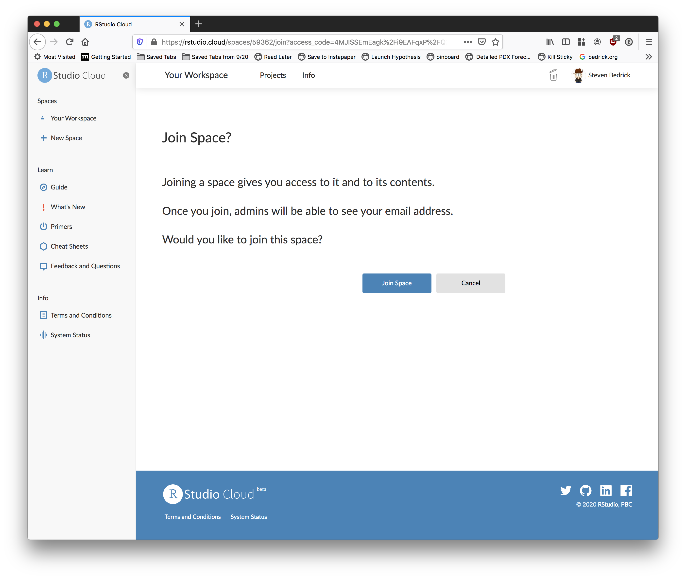
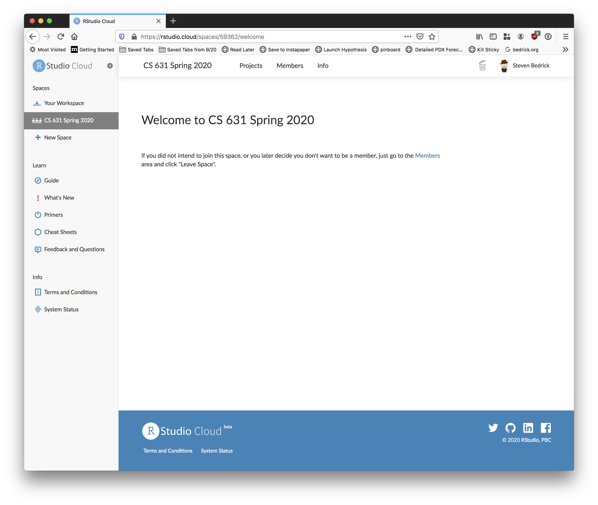
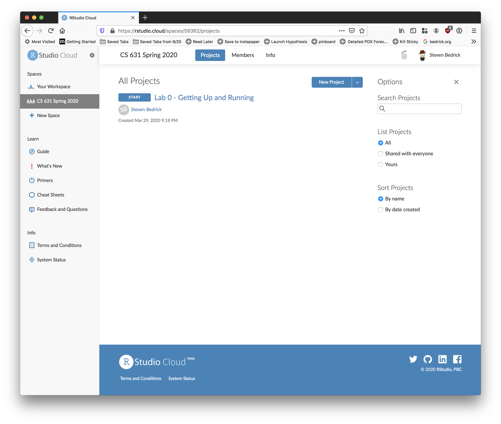
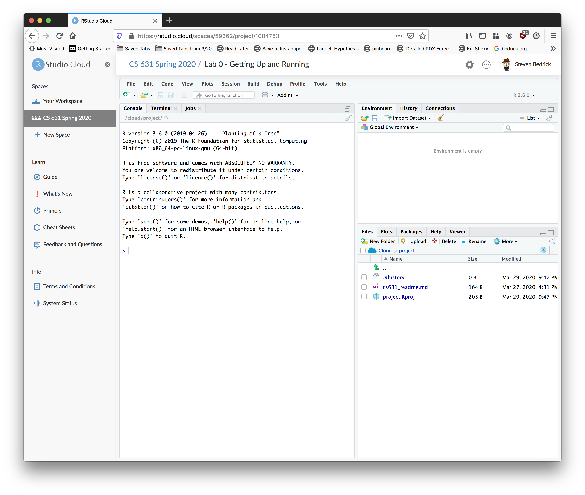
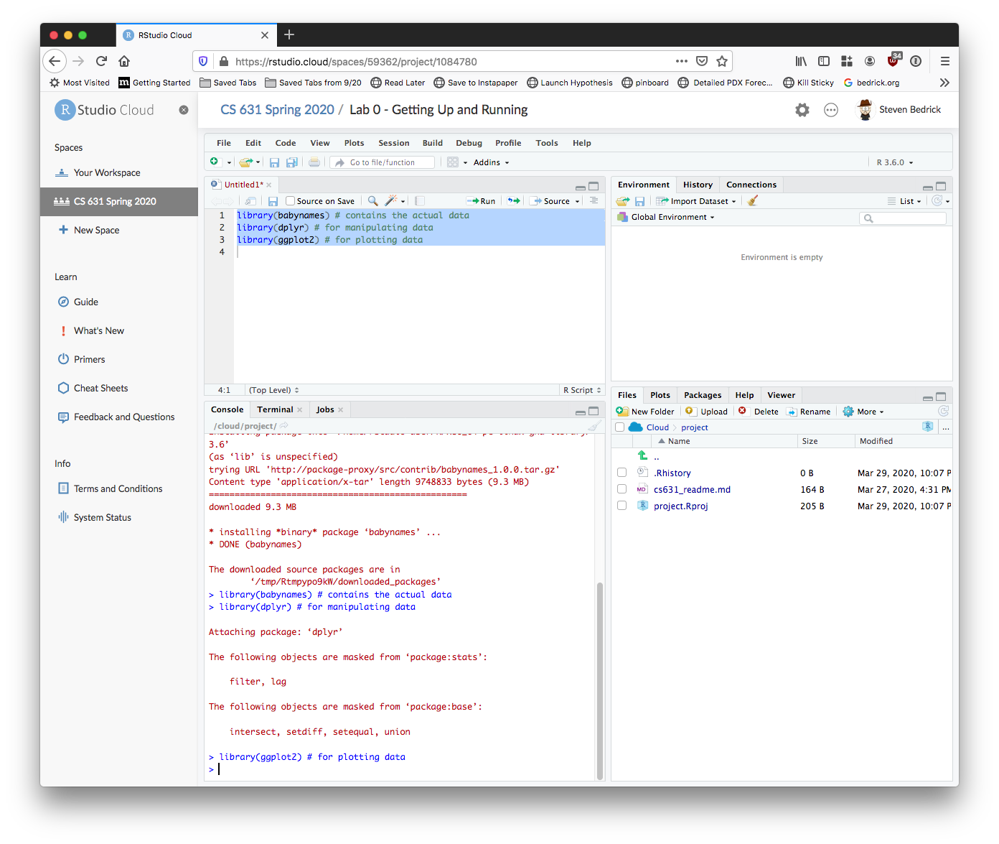
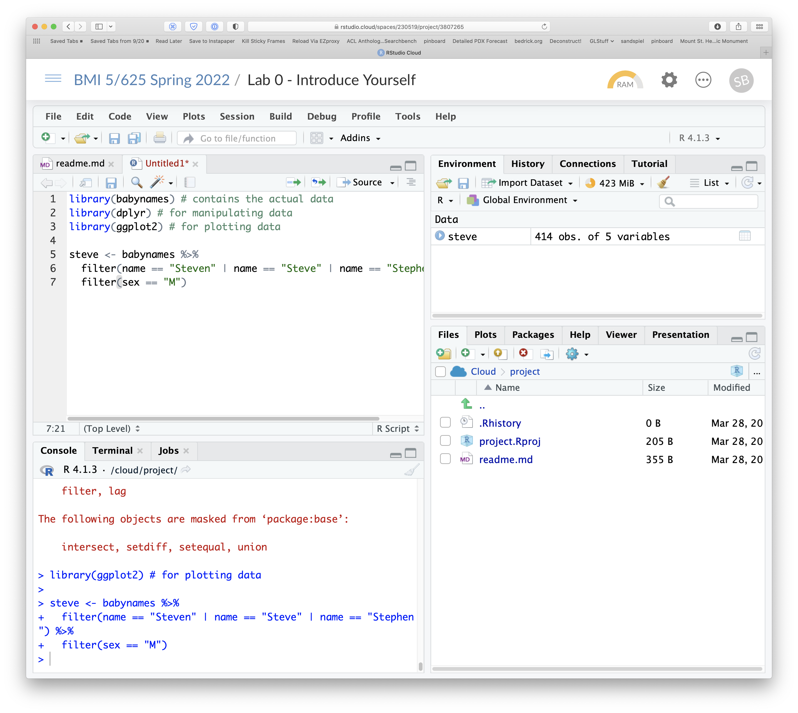
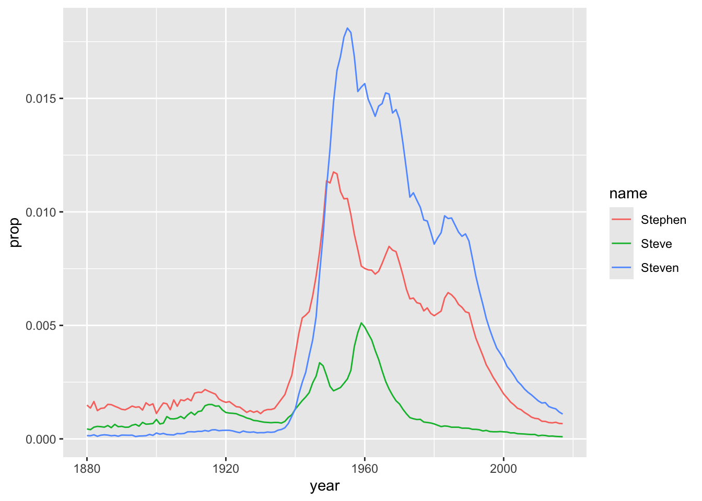

Introduce Yourself
Steven Bedrick and Alison Hill
Read all the way through step 6, and note that there is a file that needs to be turned in to Sakai before Wednesday at noon!
1 Overview
In this class, we will be working primarily with R, a free and open-source software environment for statistical computing and graphics.
What is R?
- R is the name of the programming language itself,
based off of S from Bell Labs, which users access through a command-line
interpreter (
>)
What is RStudio?
- RStudio is a powerful and convenient user interface that allows you to access the R programming language along with a lot of other bells and whistles that enhance functionality (and sanity).
What is RStudio Cloud?
- RStudio Cloud is web-based version of RStudio. Think Google Docs, but for R. Pretty much anything that you can do in RStudio, you can do in RStudio Cloud, but without having to install anything locally. For this class, you are certainly free to install RStudio on your local computer, but we will be using several features of RStudio Cloud to help manage assignments and save everybody time.
1.0.1 Our Goal for Today
Our end goal is to get you looking at a screen like this:

2 Sign up for RStudio Cloud
Go to https://rstudio.cloud and sign up for an account.


Once you’re signed in, you should be looking at something like this:

At this point, you are ready to join the class workspace, which is where you will find all of the labs for this term, and in which you will do all of the assignments. To join the workspace, look on Sakai for the sharing link. When you click the link, you should be prompted to join the class workspace:
  Click the “Projects” tab at the top to see the various labs and assignments (right now, there should just be one):

You can create your own projects from scratch in the class workspace, or you can start with one of the template projects. For labs and some assignments, I will have put together templates for you to start from. When you click “start” next to a template project, RStudio Cloud makes you a personal copy of that project, and then all of your changes and work are specific to your copy.
Begin by clicking the “Start” button next to the first project (“Lab 0”). After a few moments, your screen should look something like this:

2.1 Check in
- Place your cursor where you see
>and typex <- 2 + 2, hit enter or return, then typex, and hit enter/return again. - If
[1] 4prints to the screen, you’re all set!
There’s a lot going on, here. If you’re familiar with the desktop version of RStudio, this should look very familiar; if not, don’t worry! You’ll find your way around very quickly.
Also, note that on the left-hand side of the screen there is a set of links labeled “Learn”. RStudio has done a great job of providing tutorials and documentation about how to use their tools, and I encourage you to take a look at the various resources under that tab to familiarize yourself with the RStudio environment.
3 Install packages
One of the best things about R is its rich ecosystem of add-on packages and tools. “Out of the box”, R comes with good but basic statistical computing and graphics powers. For analytical and graphical super-powers, you’ll need to install add-on packages, which are user-written, to extend/expand your R capabilities. Packages can live in one of two places:
- They may be carefully curated by CRAN (which involves a thorough
submission and review process), and thus are easy install using
install.packages("name_of_package", dependencies = TRUE). - Alternatively, they may be available via GitHub. To download these
packages, you first need to install the
devtoolspackage.
install.packages("devtools")
library(devtools)
install_github("name_of_package") # replace with the actual name of the packageSide note: for this lab, you will not need to install any packages from Github- this is just for future reference.
One nice thing about using RStudio Cloud is that a workspace project
(like the one you’ve just opened up) can come pre-loaded with the
necessary libraries, which is a real time-saver in a classroom
environment. For example, the project you’re using right now already has
the devtools package installed. But for the next part of
the lab, you’ll need to install one additional package.
Place your cursor in the console again (where you last typed
x and [4] printed on the screen). You can use
the first method that we described above
(install.packages()) to install the babynames
package from CRAN:
install.packages("babynames")Mind your use of quotes carefully with packages.
- To install a package, you put the name of the package in
quotes as in
install.packages("name_of_package"). - To use an already installed package, you must load it
first, as in
library(name_of_package), leaving the name of the package bare. You only need to do this once per RStudio session. - If you want help, no quotes are needed:
help(name_of_package)or?name_of_package. - If you want the citation for a package (and you should give
credit where credit is due), ask R as in
citation("name_of_package").
library(dplyr)
help("dplyr")citation("ggplot2")
To cite ggplot2 in publications, please use
H. Wickham. ggplot2: Elegant Graphics for Data Analysis.
Springer-Verlag New York, 2016.
A BibTeX entry for LaTeX users is
@Book{,
author = {Hadley Wickham},
title = {ggplot2: Elegant Graphics for Data Analysis},
publisher = {Springer-Verlag New York},
year = {2016},
isbn = {978-3-319-24277-4},
url = {https://ggplot2.tidyverse.org},
}
Heads up: R is case-sensitive, so
?dplyr works but ?Dplyr will not. Likewise, a
variable called A is different from a.
4 Make a name plot
We can do everything we need to directly from the console, but it is
often a lot easier to work in a more traditional editing environment.
Open a new R script in RStudio by going to
File --> New File --> R Script. For this first foray
into R, I’ll give you the code, so sit back and relax and feel free to
copy and paste my code with some small tweaks. Don’t worry if you’re not
familiar with the commands and functions that we are using; as the
course goes on, you will learn more about all of these.
First load the packages:
library(babynames) # contains the actual data
library(dplyr) # for manipulating data
library(ggplot2) # for plotting dataIn an RStudio editor window, you run code by either clicking the button marked “Run”, or (more frequently) by using the “run line/selection” keyboard shortcut. On a Mac, this is “command+enter”, on Windows or Linux it’s “control+enter”. If no text is selected, this will run the current line; if you’ve selected more than one line, your entire selection will be run. Depending on how your screen is laid out, you may see your selection (or line) be copied automatically down into the Console tab.
Begin by executing the three library() calls:

Next, we’ll follow best practices for inspecting a freshly read dataset. Also, see “What I do when I get a new data set as told through tweets” for more ideas about exploring a new dataset. Here are some critical commands to obtain a high-level overview (HLO) of your freshly read dataset in R. We’ll call it saying hello to your dataset:
glimpse(babynames) # dplyrRows: 1,924,665
Columns: 5
$ year <dbl> 1880, 1880, 1880, 1880, 1880, 1880, 1880, 1880, 1880, 1880, 1880,…
$ sex <chr> "F", "F", "F", "F", "F", "F", "F", "F", "F", "F", "F", "F", "F", …
$ name <chr> "Mary", "Anna", "Emma", "Elizabeth", "Minnie", "Margaret", "Ida",…
$ n <int> 7065, 2604, 2003, 1939, 1746, 1578, 1472, 1414, 1320, 1288, 1258,…
$ prop <dbl> 0.07238359, 0.02667896, 0.02052149, 0.01986579, 0.01788843, 0.016…head(babynames) # base R# A tibble: 6 × 5
year sex name n prop
<dbl> <chr> <chr> <int> <dbl>
1 1880 F Mary 7065 0.0724
2 1880 F Anna 2604 0.0267
3 1880 F Emma 2003 0.0205
4 1880 F Elizabeth 1939 0.0199
5 1880 F Minnie 1746 0.0179
6 1880 F Margaret 1578 0.0162tail(babynames) # same# A tibble: 6 × 5
year sex name n prop
<dbl> <chr> <chr> <int> <dbl>
1 2017 M Zyhier 5 0.00000255
2 2017 M Zykai 5 0.00000255
3 2017 M Zykeem 5 0.00000255
4 2017 M Zylin 5 0.00000255
5 2017 M Zylis 5 0.00000255
6 2017 M Zyrie 5 0.00000255names(babynames) # same[1] "year" "sex" "name" "n" "prop"Here are some of the kinds of questions we might want to be asking about our dataset at this point:
- How many rows (instances, cases, etc.) are there? Is the answer in the ballpark of what we expected?
- How many columns (variables) are there? Are they the ones we were expecting? Are any missing?
- What are the types of our columns? Are the ones we expected to be numeric actually numeric? What about dates?
- If we have times in any of our columns, what time zone are they in? Is that what we expected?
- If we have factors in our columns, what are their different levels? Are they levels what we expect? Are any missing?
- Are there missing values (
NA, etc.) in any of the columns? Is that what we were expecting? - Looking at a few of the actual rows of data, do the right values appear to have ended up in the right columns?
Side note: not all of these questions are relevant for all
datasets; for example, the babynames dataset does not have
any times… but it does have years, so you might want to check and see
what the range of that variable is. Does it make sense?
If you have done the above and produced sane-looking output, you are
ready for the next bit. Use the code below to create a new data frame
called steve.
steve <- babynames %>%
filter(name == "Steven" | name == "Steve" | name == "Stephen") %>%
filter(sex == "M")The first line makes a new dataset called
steve, whose “life” begins with a copy of thebabynamesdataset- the%>%tells you we are doing some other stuff to it later.The second line
filtersourbabynamesto only keep rows where thenameis either “Steven”, “Steve”, or “Stephen” (read|as “or”.)The third bit applies another
filterto keep only those where sex is male (the Social Security Administration’s database is still very 20th-century).
When you ran that command, you may have noticed a new entry appear on the right-hand side of the screen, in the “environment” tab. This tab lists all of the variables that your current environment has loaded.

Let’s check out the data.
steve# A tibble: 414 × 5
year sex name n prop
<dbl> <chr> <chr> <int> <dbl>
1 1880 M Stephen 176 0.00149
2 1880 M Steve 52 0.000439
3 1880 M Steven 17 0.000144
4 1881 M Stephen 147 0.00136
5 1881 M Steve 44 0.000406
6 1881 M Steven 15 0.000139
7 1882 M Stephen 201 0.00165
8 1882 M Steve 63 0.000516
9 1882 M Steven 22 0.000180
10 1883 M Stephen 140 0.00124
# … with 404 more rowsglimpse(steve)Rows: 414
Columns: 5
$ year <dbl> 1880, 1880, 1880, 1881, 1881, 1881, 1882, 1882, 1882, 1883, 1883,…
$ sex <chr> "M", "M", "M", "M", "M", "M", "M", "M", "M", "M", "M", "M", "M", …
$ name <chr> "Stephen", "Steve", "Steven", "Stephen", "Steve", "Steven", "Step…
$ n <int> 176, 52, 17, 147, 44, 15, 201, 63, 22, 140, 62, 13, 165, 66, 20, …
$ prop <dbl> 0.00148649, 0.00043919, 0.00014358, 0.00135757, 0.00040635, 0.000…You should see that the structure of the steve dataframe
looks just like that of the babynames dataframe, but with
many fewer rows.
Again, if you have sane-looking output here, move along to plotting the data!
name.plot <- ggplot(steve, aes(x = year,
y = prop,
group = name,
color = name)) +
geom_line() Now, if you are following along precisely, you will not see your
plot! This is because we saved the result of ggplot with a
name (name.plot) But check out the top right pane in
RStudio again: under Data you should see
name.plot— so it is there, you just have to ask
for it. Here’s how:
name.plot 
5 Make a new name plot
Edit my code above to create a new dataset (don’t worry if you’re not
sure about what every single bit of the code is doing, just dive in and
go for it). Pick a handful of names to compare how popular they each are
(these could be different spellings of your own name, like I did, but
you can choose any pair (or trio, etc.) of names that are present in the
dataset). Make the new plot, changing the name of the first argument –
steve – in ggplot() to the name of your new
dataset.
6 Other cool
babynames projects
For inspiration:
- Julia Silge ‘My Baby Boomer Name Might Have Been “Debbie”’:
https://juliasilge.com/blog/my-baby-boomer-name/
- Use Julia’s Shiny app: https://juliasilge.shinyapps.io/PredictNamesApp/

- Use Julia’s Shiny app: https://juliasilge.shinyapps.io/PredictNamesApp/
- Hilary Parker: Hilary: The Most Poisoned Baby Name in US History: https://hilaryparker.com/2013/01/30/hilary-the-most-poisoned-baby-name-in-us-history/

7 Resources